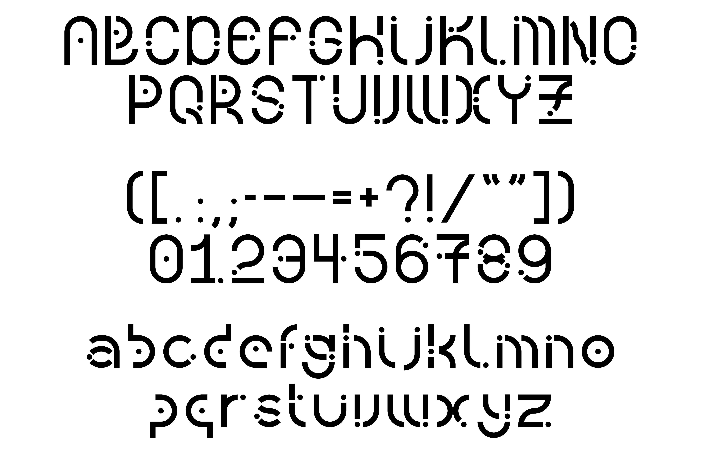

Manifesto: Designer as Curious George
I created a motion graphic for Constantin and Laurene Leon Boym's "Manifesto #16: Designer as Curious George" from the design manifestos collection. This manifesto resonated with me because it uses the character Curious George to illustrate how designers should always be driven to play, experiment, and embrace failure as a learning experience.
TouchDesigner: Artist Recreation
Mainly inspired by Camille Utterback’s installations, in which she uses different texts, icons, images, etc., to create abstract symbolic systems, as well as our relationship with interfaces and symbolic systems of the machines, I recreated her installation, Visual Resolve, 2000, an abstracted version of the participants created on the screen, where she explores the levels of the icons and the overall image. This project connects to the MAGNIFICATION project, and exploring how magnification can be experimented with and how it challenges our visual perception in a digital space.
Project 4: Artist Recreation
for School of Art, Media, and Technology, BFA DT Interactive and Immersive environments, TouchDesigner with Torin Blankensmith (Spring 2024)
Note: this uses TouchDesigner Version 2023.11600

TouchDesigner: Music Visualizer
I created my own VJ set with 4 unique audio reactive visualizers to play through Jungle's Candle Flame. I linked up TouchOSC to handle transitioning between the visualizers and controlling parameters in each visualizer.
Project 3: Music Visualizer
for School of Art, Media, and Technology, BFA DT Interactive and Immersive environments, TouchDesigner with Torin Blankensmith (Spring 2024)
Note: this uses TouchDesigner Version 2023.11600
From Print to Motion
YOKKAO's Muay Thai hand wraps feature typography and icon, providing a balance of detail for animation. I created a 15-second animation using After Effects that reveals the visual elements of the hand wraps' design. I carefully planned the sequence and timing, determining the order in which elements appear, placing them on the screen to ensure a cohesive final image. To enhance the animation, I incorporated sound effects, making it more engaging and dynamic. Throughout the process, I tried to maintain the spirit of the original hand wraps and the sport while creating a visually compelling piece.
TouchDesigner: Experimental Camera
This project explores designing a camera to capture specific subjects—whether a person, place, or object. It investigates how camera features and filters influence and alter our perception of these subjects. This project challenges conventional cameras by offering unique perspectives through their specialized functions and filter effects.
Project 2: Experimental Camera
for School of Art, Media, and Technology, BFA DT Interactive and Immersive environments, TouchDesigner with Torin Blankensmith (Spring 2024)
Note: this uses TouchDesigner Version 2023.11600
A Play with Motion & Sound
In this project, the class collaboratively created a "music video" using the given music piece by combining shapes and movement techniques to illustrate synesthesia and cause and effect. I aimed to align the visuals with the music, considering composition, sequence, and color palettes. Each student animated an assigned music segment and also created the opening title and closing credits for the class compilation using After Effects. The goal is to understand how sound guides the movement and behavior of objects, using simple shapes and colors to enhance the music's rhythms and dynamics.
Breaking News: Long Live the Chicago Rat Hole
This project explores how time-based presentation can transform a simple typographic message, examining the interplay between form and content in motion. By animating the headline of the article "Long Live the Chicago Rat Hole" from The Atlantic, I looked the effects of size, placement, composition, sound, speed, pauses, repetition, spacing, and color on the message over time. How does the headline change as it moves across a timeline? How does animation reflect the article's content or convey an opinion? This project aims to reveal the dynamic potential of headlines through motion.
TouchDesigner: Animation
The conceptual focus is on distortion and pixelation, with an audio track that complements the visual theme. I experimented with different elements as starting points and built on the initial elements using other TOPs and CHOPs.
Project 1: Animations
for School of Art, Media, and Technology, BFA DT Interactive and Immersive environments, TouchDesigner with Torin Blankensmith (Spring 2024)
Note: this uses TouchDesigner Version 2023.11600
hands (shot on 16mm)
Moving from the everyday rhythm of pedestrian life to the charm of artistic moments, the film reaches its peak with hands in a lively dance. Each frame shares the unique stories held in the hands of a lively city, unveiling a new tale in every shot.
MAGNIFICATION
The microscope is an incredible tool that makes it possible to look into landscapes that are hidden from the naked eye. It is an instrument of revelation, one that reveals the complexities of the invisible. Magnification embraces what is not apparent and reveals an intricate web of sophistication and elegance woven into even the smallest elements, where each magnified imagery turns the ordinary into something extraordinary.

Complement :)
This project (publication & website mockup) takes a closer look at the intricate connection of elements, showing how even those with less innate value on their own can enhance and elevate something else, eventually improving that “something else.”
It is about the underlying relationships and the narratives, how each small, simple thing can develop and expand to become a part of an interesting story and add to a more vibrant whole. So a lot of things in our environment contributes to creating a narrative, enhancing an experience, and ultimately, making something better.

wheels on the bus
(project 3. intx w/ the city: New York City in Data)
Data is all around us and can help us understand new aspects about our environment. Using the New York City open data, a set of data on bus breakdown and delays is selected and visualized using p5.js.
This project considers the relationship between the form, the story, and the data itself. How does the data’s container help encourage an understanding of the data not possible without it?

UFC 287: Pereira vs Adesanya 2
Event poster printed on the letterpress for UFC 287: Pereira vs Adesanya 2, a mixed martial arts event by the Ultimate Fighting Championship that took place at the Kaseya Center in Miami, Florida on April 8, 2023.

People Watching People: Chinatown, Manhattan, NY
(project 2. intx w/ data: Elastic Collection)
Any time you see a multiplicity of an object, you begin to notice similarities and contexts in a new way. Seeing multiple of an object allows for this kind of in depth research that observing one object does not. The way the object is documented and organized helps direct the viewer on how the object is meant to be experienced.
This project investigates the themes of privacy through people-watching. The aim of this project is to gather and organize a collection of data, understand metadata, to tell a story through content curation and order, to experiment with interactions with a collection, and to develop a working relationship of JavaScript objects and data collections.
* all data is pulled from a JSON file and uses JavaScript & is responsive and function on a mobile screen

zine: HOME
A 48-page zine on Chinese and Thai wedding traditions. As someone with Chinese and Thai heritage, this developed from my interest in these cultures' wedding traditions and cultures.

Stories as Networks
(project 1. intx w/ typography)
The reader will not only be able to read the story “On Beginnings” from Madness, Rack and Honey by Mary Ruefle, but also experience my interpretation of the story.
The aim of this project is to build a multi-page website that experiments with navigation to convey meaning, and to interpret a story through expressive typography online.

Core 2: Interaction - Lab Assignments
Core 2: Interaction Lab is designed around a series of small workshops that teach beginning and intermediate interaction design through a hands-on engagement with HTML, CSS and Javascript.
Core 1: Interaction (Fall 2022)
Harmonic Collection: each week, an entry is designed and coded to this collection that explores my daily life. at the end of the semester, a website that houses 10 programmed entries is delivered.

EDITORIAL DESIGN
A 50-page publication based on a selection of articles from a credible online newspaper (or magazine).

TYPOGRAPHIC POSTER
A typographic poster promoting the “opening” of TamJai SamGor MiXian, a renowned noodle shop from Hong Kong, incorporating Chinese typography to showcase the rich cultural heritage and essence of the restaurant.

TYPOGRAPHIC CONTRAST
A a booklet delving into the artistic impact of typographic contrast, offering a comprehensive study of its formal effects, diverse visual outcomes, and layout design in a multipage format.

MODULAR TYPEFACE
A distinctive typeface constructed by merging modular components using fixed units and an underlying grid, exploring the defining characteristics of each letter and the visual cohesion created by repeating elements.
MVI_2496 CHEAT CODES (CYANOTYPE)
*** warning: video contains flashing images and loud audio
CINEMATOGRAPHER & EDITOR
for time (spring 2022): final project
NEW YORK, NY
FEB 05, 2022 & MAY 10-12, 2022
MVI_2400 CHEAT CODES (CYANOTYPE)
*** warning: video contains flashing images and loud audio
CINEMATOGRAPHER & EDITOR
for time (spring 2022): final project
NEW YORK, NY
FEB 05, 2022 & MAY 10-12, 2022
I DON'T KNOW YOU (YET)
The card game “I DON'T KNOW YOU (YET)” aims to foster vulnerability and deep conversations, providing a safe space for transparency and meaningful connections through three levels of questions and wildcards, with a pastel color palette reflecting openness and relaxation.

POST CONCERT BLUES
In this one minute video project, I created a documentation of a performance, more specifically capturing a concert and what it means to leave the space right after, to have the music follow u or linger, but to have to “conceal” it in public.
NEW YORK, NY
JAN-MAY 2022
LOVE STORY
WRITER, DIRECTOR, PRODUCER, CINEMATOGRAPHER & EDITOR
love story is a short film about the relationship between GIRL 1 and GIRL 2 (played by Aviela Berk & Sade Ajas) and how it turns out to be not as romantic as you might think. The art film experiments with the archetypes of psychological horror films and attempts to break the stereotypical “look” and “plot” while still aiming to leave the audience unsettled afterwards.
BOSTON, MA & NEW YORK, NY
DEC 01, 2021
GOODBYE, SUMMER 2021
EDITOR, CINEMATOGRAPHER: Janice Cheung, Seewing Chun and Tiffany Iu
HONG KONG
SEP 15, 2021
ANAIA 2019 x LEVI'S
DIRECTOR, CINEMATOGRAPHER: Janice Cheung and Seewing Chun, EDITOR
ANAIA is Island School's annual student-led fashion show, supporting a charity, Maggie's Cancer Caring Centre. To acknowledge the collaboration between Levi’s®️ and ANAIA 2019, this promotional video was designed to capture how the Levi’s®️ brand epitomizes classic American style and effortless cool, and to celebrate self-expression and individuality through their clothing.
HONG KONG
FEB 10, 2018
ANAIA 2019 x FACE REVEAL
CO-DIRECTOR, CINEMATOGRAPHER: Aryan Bellani, Janice Cheung, Seewing Chun and Yunah Frank, EDITOR
The purpose of this promotional video was to announce the faces of ANAIA 2019. The video not only he ed promote the upcoming show, it also showcased an opportunity for students to become a model.
HONG KONG
OCT 03, 2018